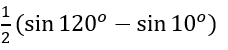
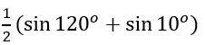
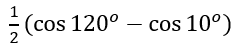
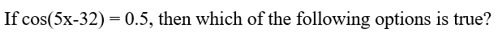
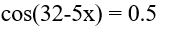
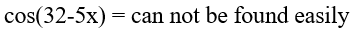

Question 1
Solve the system: y = x 2 + 4x – 5, y = 0
Select one:
(0, -5) and (1, 1)
(4, 4) and (-5, -5)
(1, 0) and (-5, 0)
No solution
None of these
Question 2
Solve the system: 2x + 3y = 7, 3x - 5y = 1
Select one:
(2, 1)
(1, 2)
(0, 0)
There is no solution
None of these
Question 3

Answer




Question 4
 = 2x^{2} + 8x + 6") has an axis of symmetry. What is the equation of the axis of symmetry?
has an axis of symmetry. What is the equation of the axis of symmetry?
Answer
Question 5
Solve for x: (1/2) x = 16
Select one:
-4
-2
2
4
None of these
Question 6

Answer
Question 7
 = -2x^{2} - 8x - 6") has a maximum or minimum value. What is the maximum or minimum value of g(x)?
has a maximum or minimum value. What is the maximum or minimum value of g(x)?
Answer
Question 8

Answer
Question 9
The half-life of carbon 14 is 5,730 years. Approximately , how old is a bone that has 70% of its original carbon 14?
Select one:
7,500 years
7,000 years
6,500 years
6,000 years
Less than 6,000 years
Question 10
The graph of y = 4sin (3x + 2) + 1 has amplitude of:
Select one:
0
1
2
3
4
Question 11
What is the equation of the line passing through (-1, 4) and parallel to y = 2x + 1?
Select one:
y = 2x + 6
y = 2x + 1
y = 2x
No such line exists
None of these
Question 12
Answer
Question 13
Solve the system: y = e 3x , and y = e 2x-1
Select one:
(0, 1)
(1/5, e 3/5 )
(-1, e -3 )
No solution
None of these
Question 14

Answer
Question 15
Solve the system: 2x + y = 6, -2x + 3y = 5
Select one:
(2, 2)
(11/4, ½)
(13/8, 11/4)
No solution
None of these
Question 16
The horizontal asymptotes of
 \frac{5x^{2} - 10}{ 10x^{2} - 12x + 20}") are:
are:
Answer
Question 17
If
f(x) = 3x + 2 and g(x) = x – 4, (g/f)(1) is:
Select one:
Undefined
–3/5
–5/3
3/5
5/3
Question 18

Answer
Question 19
Solve the system: 3x – 2y = 10, 5x + 3y = 23
Select one:
(0, -5)
(4, 1)
This system is dependent
No solution
None of these
Question 20

Which one of the following is true for the above graph?
Answer
Question 21
What
is the period of y = 3cos (8x + π/2) + 5?
Select one:
2π
π
π/2
π/3
π/4
Question 22
Solve the system: y = x 2 – 5, y = 2x - 2
Select one:
(3, -1)
(-1, 3)
(3, 4) and (-1, 2)
(-1, -4) and (3, 4)
None of these
Question 23
If f(x) = 3x +2 and g(x) = x -4, (f/g)(4) is:
Select one:
Undefined
0
14
(3, 2, 4)
None of these
 = 5x^{4} + 10")
![g(x) = \sqrt[]{x}](./file03_files/05f05e9665fd4a505ddd2df11bb72e2f.png "g(x) = \sqrt[]{x}")

")


![5x^{9/2} + 10 \sqrt[]{x}](./file03_files/02a1bec39778f95dd8f32fdceb3dcbd2.png "5x^{9/2} + 10 \sqrt[]{x}")
Question 25

For the above graph, which one of the following statements is correct?
Answer
Question 26
How much must be invested today at 10%, compounded continuously, to be worth $271,000 in 10 years? Pick the closest answer. [Use e = 2.71]
Select one:
$250,000
$100,000
$10,000
$1,000
No amount will be enough
Question 27
 are:
are:
Answer
Question 28
What are the possible rational roots of f(x) = x 4 -7x + 8?
Select one:
{8}
{+-1, +-2, +-7, +-8}
{+-1, +-2,+-8}
{+-1, +-8}
{+-1, +-2, +-4, +-8}
Question 29
Answer
Question 30
If I invest $10,000 at 5% compounded yearly, how much will I have in 8 years? Choose the closest answer.
Select one:
$5,000
$10,000
$15,000
$20,000
$25, 000
Question 31
Solve the system: x + y + z = 3, 2x – y + 3z = 3, x - 2y + 3z = 0
Select one:
(1, 1, 1)
(1, 2, 0)
(2, 1, 0)
No solution
None of these
Question 32
What
is the exact value of sin (15 degrees)?
Select one:
.380
sqrt
(2 – sqrt(3)) / 2
sqrt
(2 + sqrt (3)) / 2
.350
Impossible
Question 33
The removable discontinuities of the function
 = \frac{x - 10}{x^{2} - 12x + 20}") are:
are:
Answer
Question 34

Answer




Question 35
How
much must be invested today at 10 %, compounded continuously, to be worth
$165,000 in 5 years? Pick the closest answer. [Use e = 2.71]
Select one:
$150,000
$110,000
$100,000
No amount will be enough
Question 36
What kind of system is y = 3x – 5, 2x + y = 8?
Select one:
Independent
Inconsistent
Dependent
Bizarre
None of these
Question 37
Solve the system: x + y + z = 3, 2x – y = 3
Select one:
(y , 2x -3, 6 - 3x)
(x , 2x -3, 6 - 3x)
(z, 2x -3, 6 - 3x)
No solution
None of these
Question 38
Solve the system: x = y
2
+ 4y – 5, x = 0.
Select one:
(0, –5) and (1, 1)
(4, 4) and (–5, –5)
(0, 1) and (0, –5)
No solution
None of these
 = -7x^{3} - 10x^{2} - 4x + 7")


Question 40

Answer